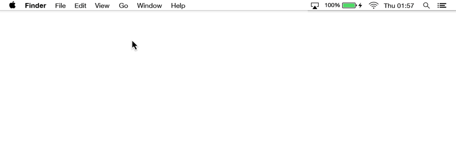

How to Use
Command Line
The command line lets you communicate with your computer directly and efficiently, the way a programmer would. Whether you want to be a developer, or just want a more powerful way to use your computer, the command line puts you on the inside track to operating your computer like a pro.
This tutorial will introduce you to the command line interface and have you opting for your keyboard over your mouse to control your computer.
Complete this tutorial in one sitting
or come back later to finish what you started.
Contents
Part One: What is the Command Line?
Part Two: How Your Computer is Organized
Part Three: Navigate Your File System
Part Four: Manipulate Files
Index
Glossary of Terms
Glossary of Commands
We ♥ GIFs, and we’ll be using them as visual aids. So, if you miss a demonstration just wait, and it will replay over and over and over and over again.

Part One
What is the command line?
The Command Line is one of two ways to interact with your computer.
You could go through the rest of your life never using it. You could move your mouse, click on icons, drag and drop files from one folder to another in a state of ignorant bliss.

When you’re using the computer this way, you’re using what’s called
a Graphical User Interface or GUI.
In a GUI (pronounced “gooey”), you communicate with your computer using a combination of text, images and gestures.
Command line, on the other hand, is a text-based interface, where you communicate with your computer using text alone.
Back in the day, the command line was the only way to interact with your computer, until the video display terminal was introduced in the mid-60s.
As a programmer, you won’t need to revert to wearing bell-bottoms but you will need to do tasks on your computer without a mouse.
How to Access the Command line
We’ll access the command line using the Terminal (capital-T) application, the most common application on MacOSX and Linux machines.
Terminal icon
You can open up Terminal from the Finder
By going into your Applications folder, and then into your Utilities folder, and then double clicking on the Terminal icon.
Or by using Spotlight.

This tutorial does not explore the command line that comes with Windows, because most developers don’t use it. If you’re a Windows user, we recommended installing a command line program like Cygwin or MSysGit in order to follow along with the syntax we use here.
Your Turn
- Go ahead and open Terminal on your computer —a new window will appear on your screen.
- Great! Now everyone who can see over your shoulder will think you’re a badass hacker.
How to Get Started Using Terminal
When you open Terminal, you should see a window like this:
This window is where you’ll tell the computer what to do, and where the computer will display its reply.
Talk the talk
The prompt is the ‘$’ that automatically shows up on the end of the first line. It’s the command line equivalent of ‘stand-by’ and indicates Terminal is ready to accept your command. We’ll learn a few commands later in this lesson.
Talk the talk
The cursor follows the prompt and the text you type will appear here.
Just like in every other setting where you've ever seen a cursor.
Talk the talk
The username of the person logged in precedes the prompt, and as you can see above, this user is named samspade.
Your turn
- What name do you see in your open Terminal window just before the prompt? This is your username.
- From now on, mentally subsitute yours for the one you see on screen in any example code.
- You will never need to write out the username and prompt, just any text that follows it.
Part Two
How Your Computer is Organized
Before we get into a few basic commands, it’s important to understand how content on your computer is organized.
In the Finder GUI, you’re probably used to viewing folders and files as icons in a list or in columns.
Your computer organizes and stores files using a file system.
In programming-speak, all folders are called directories.
This folder named World will serve as our first directory.
A directory within another directory is called a subdirectory.
Africa is a subdirectory of World.
A directory that contains a subdirectory or file is called a parent directory.
The parent directory of Africa is World.
The topmost directory of any file is called the root directory —nothing contains it.
The root directory of Nairobi.pdf is World.
For the purposes of this lesson, the root directory of everything on your computer is your home directory.
It’s aptly represented in the GUI by a house icon.
*You can also use the keyboard shortcut,
Shift + ⌘Command + H
but you must be in the Finder for this to work!
Your Turn
- We’ve gone ahead and created a new directory for you, called World. Download it here.
- When you double-click on the zip file, it will create a new folder next to the zip file.
- In the GUI, drag the new World folder from your Downloads folder into your Home Directory.
We know how file and directories appear in the GUI –now let’s find our way around this system in command line.
Computers are dumb. To ask for a specific directory or file in command line, we need to write out a precise address, called a path so that the computer knows exactly where to find it.
For example, if you call your travel agent and say "I want to go to Main Street," without any additional information, your travel agent wouldn’t know which of the 10,466-plus Main Streets you want.
You have to be more specific with your computer.
Your computer understands two kinds of paths, absolute and relative.
An absolute path starts from the root. It’s analogous to saying the full address you want starting from the World as our reference point.
This absolute path is the equivalent of telling the computer,
“Look in the World directory,then look in the North_America directory, then look in the United_States directory, then look in the Alaska directory, then look in the Anchorage directory for the Main_Street directory.”
If you’re standing on a street corner in Anchorage, Alaska you wouldn’t need the full address to find Main Street. You could just jump in a taxi and say "Main Street, please."
In this case, you’d be using a relative path.
The directory you are currently in is called your working directory.
Your working directory name will always be displayed before your username and prompt in the command line.
It’s important to know where you’re working from so that you know whether to communicate with your computer using absolute or relative paths.
Part Three
Navigate Your File System
As you can see, when you open up a new Terminal window, you are automatically situated in your home directory:
The tilde “~” symbol is a shortcut for the home directory.
Shortcuts will come in handy as we start working with more complex file systems.
Think about it, if your file is buried deep inside a maze of directories, it would take a lot of time to write out the entire path.

To see the full path for your working directory, you can use the pwd command, which stands for print working directory.
For example, if we wanted to see the path for the working directory on Sams-MacBook-Air, we would write:
Since we are currently situated in our home directory, the command returns /Users/samspade.
Your Turn
-
In your open Terminal window, tell your computer to type
pwdand then press ENTER. - Command Line will return the path to your home directory starting with “/Users/...”
- Congratulations! You just executed your first command.
Unlike the GUI, you cannot see what other directories or files are present just by being in a particular directory. You have to tell your computer to list them for you using the ls command:
Typing ls alone will display the contents of your working directory:
Translated to the GUI of your Finder window, you’re simply looking inside a folder:

Note that our working directory is in the frame of both the finder window and the Terminal window.
Your Turn
- In your open Terminal window, list the contents of your working directory.
- The computer should return the names of a bunch of directories from inside your home directory, such as Applications, Desktop, Downloads, Pictures, and World.
If you’d like to explore another directory, you need to use ls with a path.
For example, ls ~/Documents will show you what's inside Documents:
Note that even though we just browsed the contents of the Documents directory, we are still currently working from the home directory.
The addition of ~/Documents is what is known as an argument. The command tells the computer what to do, and the argument tells the computer what to do it to.
For example, your mom could tell you to "Clean!" or she could tell you to "Clean the garage!"
Your Turn
- In your open Terminal window, list the contents of the World directory.
- The computer should return 6 continent directories: Africa, Asia, Australia, Europe, North_America, and South_America.
In addition to arguments, we can modify commands using options. They describe how the command should be carried out.
For example, your mom can tell you to clean the garage "quickly" or "right away". Though this is the order we would use in English, in command line the option needs to come between the command and the argument:
Let’s look at a few options we can use with ls.
You can use the -l option to show a longer list, including the directory permission, size, owner, modified date and time, and name.

You may have noticed that our Terminal window is looking pretty crowded. A scrollbar has appeared on the right side, so that we can review our previous lines of code:
All of this preceding text is known as Scrollback (not to be confused with the ’90s band Nickelback).
If you would like to clear your scrollback, simply use the keyboard shortcut ⌘Command + K or enter the clear command. Let’s go ahead and do that now:
Don’t worry, this does not permanently delete your command line history.
You can review your command line history by using the ⌘Command and ▲ and ▼ arrows.
Your Turn
-
Use the
-loption with thelscommand without an argument, to list the contents of your working directory. -
Next, type
clearand press ENTER. - Notice that the prompt has now moved to the top of the window to give you space to work.
- Try reviewing your code using your keyboard.
There are also some files that ls won’t show you by default—these are what are known as “hidden” files.
Hidden filenames start with a dot character and they contain important program configuration information.
Unless you are confident programming in UNIX, don’t touch these files. If you’re curious, you can see them by passing the -a option, which modifies ls to show all files contained in a directory:
See how many more files are actually contained by the home directory?
Fun fact
Options can be grouped together in any order, and still convey the same information to your computer.
For example, ls -al and ls -la will both yield the same result!
Your Turn
-
Pass the
-aoption with thelscommand for the World directory. - Can you spot the hidden files? There should be 14 items total in the World directory, including the 6 continent directories we saw in a previous activity.
- Clear your Terminal window.
Let’s move from one working directory to another in command line.
To do that, we’re going to use a command that always takes an argument: the command cd which allows you to change directories.
Let’s say we want to move from the samspade directory into its subdirectory, Documents, we would write:
Notice how our working directory has changed.
Translated to the GUI, cd is the equivalent of double clicking on a folder and working in that new window:
To be sure we successfully moved, we can use the pwd command:
Now we know what address to use to find Documents when we’re totally lost.
To move back up to our home directory, samspade we would need to write out the full path OR use this nifty shortcut “..”:

“..” represents the parent directory of the one you are currently in.
Your Turn
- In your open Terminal window change your working directory to Europe.
- Next, change your working directory to France using a relative path.
- List the contents of your working directory. If you've successfuly changed working directories, you should see the files eiffel_tower.jpg and mona_lisa.jpg.
- Clear your Terminal window.
Part Four
Manipulate Files
Alright, now that you know your way around your computer’s file system, you’re ready to manipulate these files in command line.
Let’s make a new directory inside of Documents, and call it To Do Lists.
We can use the mkdir command, which takes two arguments:
- the name of the new directory and
- the destination path of that directory.
We should check to see if we were successful by listing the contents of the Documents directory:
Oops. We didn’t mean to make three directories To, Do and Lists!
There’s a lesson here: don’t put spaces in your file or directory names. Remember, spaces are how the computer tells the difference between commands, options and arguments.
You can indicate with quotes that "To Do Lists" is one continuous filename, but it's better to just avoid special characters altogether.
Not to worry.
We can delete or remove files by running the rm command. To delete a directory, we need to pass the recursive option -r, which tells your computer to delete that directory along with any files or subdirectories it contains.
To be sure they’re gone, we should list the contents of our home directory again.

You can't undo the rm command, so be careful when you delete files. Removing files in command line is not the same as moving a file to the Trash.
If you’re feeling cautious, you can use the -i option which will create an interactive warning when you press ENTER.
Above is what our command line would have looked like had we passed the -i option. To proceed you will need to type y (yes, please delete) or n (no, please don’t delete).
Translated to the GUI, you’re asking for an alert box to ask you whether you’re really, truly sure you want to delete each file or folder:
Note that the GUI window doesn’t perfectly illustrate what is happening in command line. This is because we are manipulating files in a directory different from our working directory—you can’t do this in the GUI. You’d have to open a Documents window in order to work with its contents.
Your Turn
- You may have noticed that we neglected to include Antarctica in the World directory.
- Go ahead and correct this mistake straight from command line; make a new directory titled “Antarctica” inside the World directory.
- To be sure you created the directory in the right place, list the contents of the World directory.
- Clear your Terminal window.
Now let’s try that again. We’ll substitute underscores for the spaces, and call our new directory To_Do_Lists
Fortunately, we only need one command to rename and move files and directories: the mv command.
The mv command always takes two arguments:
- To move directories or files to a location;
- To rename a file.
$ mv [FILE_NAME] [LOCATION]$ mv [FILE_NAME] [NEW_FILE_NAME]
For example, if we wanted to change Monday Tasks.txt to monday_tasks.txt without moving the file, we would write mv 'Monday Tasks.txt' monday_tasks.txt.
If we wanted to move monday_tasks.txt to To_Do_Lists we would write mv 'monday_tasks.txt' To_Do_Lists
If we wanted to move $aturday Tasks.txt to To_Do_Lists and rename it saturday_tasks.txt we would write mv '$aturday Tasks.txt' To_Do_Lists/saturday_tasks.txt
Just like the rm command, mv has an -i option, which will warn you if --in the above example --a file named saturday_tasks.txt already exists in the To_Do_Lists directory.
If you move a file to a new folder that contains a file with the same name, the existing file will be overwritten with no chance of recovery.
Your Turn
- Move into the World directory.
- List the contents of South America. There should be three continent directories, Argentina, Brazil, and Chile.
- Move the contents of South America into the North America folder.
- Delete the now empty South America directory
- Change the name of North_America to Americas
- Clear your Terminal window.
Congratulations!
You’ve graduated from an average computer user to a slightly more sophisticated computer user.
Glossary A
Terms
Use the ▲ and ▼ arrows on your keyboard to view the full list of terms from this lesson.
Terminal
- An OSX application that provides text-based access to the operating system;
- Any device or application used for data entry and display in a computer system
- Synonyms : client, computer terminal, terminal emulator
Command Line
- A text-based interface.
- Synonyms : command-line interface (CLI), console
Directory
- An organizational unit, or container, used to organize computer files into a hierarchical structure.
- Synonyms : folder, catalog, drawer
File System
- A file system is a systematic way to control how information is stored and retrieved. It describes where one piece of information stops and where the next one begins. Each file system has its own structure and logic.
- Synonyms : NTFS (Windows' File System), HFS+ (Apple's File System), file allocation table, GFS (Global File System)
Path
- A sequence of symbols and names that identifies a file or directory. The path always starts from your working directory or from the root directory, and each subdirectory is followed by a forward slash.
- An absolute or full path begins with the root directory and specifies every directory above the terminating file or dirctory name.
- A relative path does not include the root or parent directory names, and refers to a file or directory directly below the current working directory.
- Synonyms : pathname
Scrollback
- The part of a scrolling display that precedes the current line or section.
- Synonyms : backscroll
Command
- The action we want the computer to take; always a single word.
- Synonyms : utility
Option
- Follows the “command” in a command line, to modify the behavior of the command in some way.
- Synonyms : flag
Argument
- Follows the “command” and “options” (if any) in a command line, and is used to explain what we want the command to act on.
- The number of arguments used generally depends on the command: some don’t need arguments, some require exactly one argument, some require lots of arguments, and some are flexible in the number they can take.
Special Characters
- Don’t use the following characters and symbols in your filenames:
- # pound
- & ampersand
- \ back slash
- / forward slash
- blank spaces
- . period
Glossary B
Commands
Use the ▲ and ▼ arrows on your keyboard to view the full list of commands from this lesson.
Your Terminal comes with a manual, and to access more (a lot more) information about any command, type man followed by the command name and press Enter:
You can scroll through a manual entry with the arrow keys or space bar. To quit this view and return to your prompt, just type q.
pwdPrints the working directory; returns the absolute path name of the current directory
$ pwd [-options]
lsLists directory contents
$ ls [-options] [DIRECTORY_NAME]
cdChanges your current working directory
$ cd [-options] [DIRECTORY_NAME]
clearClears the terminal screen
$ clear
mkdirCreates a new directory
$ mkdir [-options] [DIRECTORY_NAME]
rmDeletes directories or files permanently.
$ rm [-options] [FILE_NAME] [FILE_NAME2] ...
mv- Moves directories or files to a location;
- Renames a file.
$ mv [-options] [FILE_NAME] [LOCATION]$ mv [-options] [FILE_NAME] [NEW_FILE_NAME]